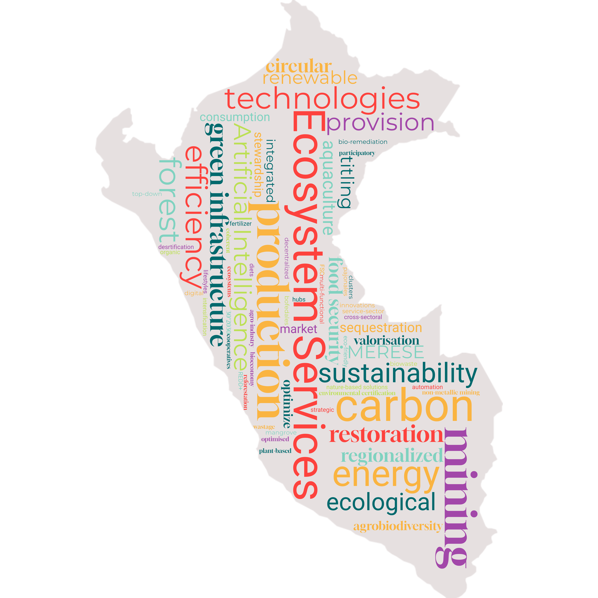

La naturaleza para la sociedad
El paisaje del Perú en 2060 ha sido optimizado para mantener la provisión de servicios ecosistémicos clave para la sociedad (1), esto se logra mediante una planificación intersectorial sólida y una transformación hacia la sostenibilidad impulsada por la adopción de tecnologías verdes y la incorporación generalizada de la valorización económica de los servicios ecosistémicos y la biodiversidad.

Características
 Cambio climático: RCP 2.6
Cambio climático: RCP 2.6
 Población: 37.21 millones
Población: 37.21 millones
 Desarrollo económico: 1192 mil millones USD
Desarrollo económico: 1192 mil millones USD
 Perspectiva de valor sobre la naturaleza: Principalmente instrumental
Perspectiva de valor sobre la naturaleza: Principalmente instrumental
 Áreas protegidas (proporción del Perú bajo protección): 30 % para 2030
Áreas protegidas (proporción del Perú bajo protección): 30 % para 2030

Cambio de valores y estilos de vida
El aumento del PIB impulsa el cambio social que hace posible la transformación del paisaje, pues conduce a una mayor conciencia ambiental (2). Las mejores condiciones económicas permiten a las comunidades invertir más en prácticas sostenibles y en educación ambiental. Este contexto refuerza el reconocimiento del papel crítico de la naturaleza en el suministro de servicios ecosistémicos vitales. Gracias a este impulso, el concepto de servicios ecosistémicos se integra en la economía, la gobernanza y la planificación (3).
En cuanto a los estilos de vida, se registra una reducción limitada del consumo personal, por ejemplo, en el consumo de carne. No obstante, las ideas predominantes sobre lo que constituye un alto nivel de vida permanecen y la adopción de tecnologías de eficiencia de recursos evita que esto sea un foco principal. Por ello, el crecimiento económico sigue siendo elevado, con un PIB per cápita que alcanza aproximadamente 1192 mil millones USD para 2060 (convertido a USD usando paridad de poder adquisitivo de 2017)El espacio vital per cápita es relativamente amplio y la migración rural-urbana continúa de modo que ~92% de la población vive en zonas urbanas para el año 2060 ((4), alineado con SSP1). Ambos factores contribuyen a la expansión del suelo destinado a la habitación humana.
Cambio de prioridades económicas
La economía transita hacia una mayor sostenibilidad y diversificación al reducirse la dependencia de las industrias extractivas y al expandirse los sectores de servicios. Un ejemplo de ello es el crecimiento del sector de Pagos por Servicios Ecosistémicos (PES o MERESE). Tras aprender de la aplicación de esquemas de PES en la gestión del agua, se amplían dichos esquemas para conservar la agrobiodiversidad y se implementa un mercado de carbono de alta integridad12.
El crecimiento del sector servicios se descentraliza, con ciudades diferentes a Lima que se consolidan como nuevos centros económicos regionales3. Esto perpetúa la migración rural-urbana, aunque reduce las disparidades entre Lima y otros centros. El desarrollo de este sector genera mayor formalización económica y parte de los ingresos fiscales se destinan a mejorar la capacidad institucional para la planificación ambiental proactiva (5).
En todos los sectores primarios existe el intento de equilibrar el aumento de la producción con mejoras en la sostenibilidad (6). El principal medio para lograrlo son marcos regulatorios sólidos y soluciones tecnológicas verdes, incluyendo la adopción de principios de economía circular4.
Por ejemplo, en agricultura se usan tecnologías digitales como automatización, teledetección y análisis de datos con inteligencia artificial para optimizar la producción5. Estas tecnologías se desarrollan rápidamente en parques industriales ecológicos6 y se difunden a través de cooperativas de productores con apoyo estatal. Gracias a ello se reduce el desperdicio alimentario a lo largo de la cadena de suministro (7). El uso de biorresiduos compostados como fertilizante urbano es un ejemplo exitoso de economía circular. En ganadería también se observan mejoras de eficiencia, si bien la producción global disminuye por el cambio hacia dietas más vegetales y la expansión de la acuicultura sostenible certificada (8). Un pequeño sector de pesca artesanal persiste, pero no se prioriza sobre la pesca industrial eficiente, que opera bajo cuotas más estrictas y avances tecnológicos.
En minería se incorpora la Responsabilidad Extendida del Productor (REP) en la ley7, lo que obliga a las empresas a asumir los impactos ambientales de todo su ciclo de vida, incluyendo la gestión de residuos. Esto incentiva prácticas circulares como la valorización de residuos mineros para la construcción y la eliminación de químicos tóxicos como el cianuro. Se otorgan nuevas concesiones, aunque limitadas a áreas con valores comparativamente menores de servicios ecosistémicos y biodiversidad, manteniendo requisitos regulatorios flexibles para preservar la viabilidad operativa.
En el sector forestal se deroga la modificación de 2023 a la Ley Forestal y de Fauna Silvestre8 y vuelve al MINAM la responsabilidad de la zonificación. Se apoya la certificación FSC para garantizar prácticas sostenibles9 y muchos concesionarios pasan de la tala a proyectos REDD+10. El turismo conserva su énfasis en actividades basadas en la naturaleza, como retiros de bienestar y deportes de aventura ecológicos, con regulaciones que destinan parte de los ingresos a la conservación ambiental.
Comunidades indígenas
Las comunidades indígenas se reconocen como actores clave en la conservación, con iniciativas impulsadas por el conocimiento ancestral que mantienen servicios ecosistémicos y abordan conflictos de uso del suelo (9). Aunque su participación en la toma de decisiones se fortalece, persisten desafíos debido a la influencia de actores externos. La seguridad de la tenencia de la tierra mejora y se implementan mecanismos de reparto de beneficios, aunque con inconsistencias que generan disparidades regionales (10). Algunas disputas de tierra continúan, por lo que se requiere un diálogo constante para equilibrar la autonomía indígena con objetivos ambientales y económicos más amplios.
Gobernanza, planificación y gestión de recursos
Los sistemas de gobernanza de la tierra y los recursos naturales se robustecen con un monitoreo y un cumplimiento más efectivos, lo que garantiza prácticas sostenibles en todos los sectores. Esta evolución se guía por una agenda de investigación ambiental dedicada a optimizar la provisión de servicios ecosistémicos (11) y por una mayor transparencia regulatoria que mejora la confianza pública. Para mantener la coherencia en la planificación, la gobernanza sigue siendo mayormente top-down, con ciertas decisiones delegadas a expertos regionales.
El objetivo principal de la planificación del paisaje es maximizar la eficiencia del uso del suelo agrupando actividades similares (residencial, agrícola, etc.) y fomentando su uso multifuncional (por ejemplo, integrar infraestructura renovable en áreas agrícolas). De esta manera, los servicios ecosistémicos se consideran directamente en los planes de Zonificación Ecológica y Económica, cuya relevancia aumenta ante el desarrollo económico regionalizado (12). En zonas urbanas se aplican soluciones basadas en la naturaleza como jardines de lluvia y cubiertas verdes para minimizar inundaciones y olas de calor, al mismo tiempo que mejoran la salud mental al reforzar la conexión social con la naturaleza11.
Las mejoras en infraestructura también reducen brechas socioeconómicas al aumentar el acceso a servicios básicos (13). Se modernizan carreteras y transporte público con el fin de promover modos más verdes y eficientes, como vehículos eléctricos12. La demanda energética se cubre cada vez más con renovables gracias a la expansión de la infraestructura correspondiente. La gestión del agua mejora con una regulación estricta, la expansión de esquemas de PES tarifarios y la implementación de innovaciones tecnológicas para optimizar su uso (14). La calidad del agua se eleva mediante métodos modernos de biorremediación13.
Restauración y protección ecológica
Como parte de la estrategia para mitigar el cambio climático, se inician proyectos de restauración ambiental a gran escala para rehabilitar áreas degradadas, con especial atención a la restauración del suelo. Además de aumentar la captura de carbono y reducir la exposición de la población local a riesgos naturales, estos proyectos crean hábitats seminaturales que albergan diversas especies, las cuales contribuyen a sostener servicios ecosistémicos clave y a fortalecer la resiliencia. De acuerdo con el objetivo del KM-GBF14, la cobertura de áreas protegidas se amplía al 30 % para 2030. Las nuevas áreas de conservación se seleccionan para priorizar servicios ecosistémicos esenciales, como el mantenimiento del agua y la captura de carbono, así como para mejorar la conectividad de la red nacional de conservación (15). Se gestionan según la IUCN categoría VI15, con diferentes niveles administrativos (nacional, regional, privado) según la escala de los servicios ecosistémicos. Esta flexibilidad permite que las comunidades locales gestionen directamente áreas con beneficios locales, mientras que las de mayor relevancia territorial siguen bajo responsabilidad regional o nacional. Las áreas existentes mantienen sus arreglos actuales de gobernanza y gestión.
References
Footnotes
https://www.gob.pe/institucion/minam/noticias/1058841-cop-29-peru-impulsa-mercados-de-carbono-que-aseguren-la-conservacion-ambiental-y-el-desarrollo-sostenible↩︎
https://vcmintegrity.org/wp-content/uploads/2021/05/VCMI-Consultation-Report_Espanol-1.pdf↩︎
https://observatorio.ceplan.gob.pe/ficha/o22_2024↩︎
https://capacity4dev.europa.eu/library/perus-path-towards-circular-economy_en?refpage=search#:~:text=Peru%20has%20made%20significant%20efforts,the%20competitiveness%20of%20productive%20sectors.↩︎
https://observatorio.ceplan.gob.pe/ficha/o45_2024↩︎
https://observatorio.ceplan.gob.pe/ficha/o19_2024↩︎
https://www.cepal.org/es/publicaciones/47895-la-economia-circular-la-mineria-peruana↩︎
https://forestpolicy.org/risk-tool/country/peru#:~:text=In%20late%202023%2C%20the%20Peruvian,reconsideration%20from%20some%20Congress%20members.↩︎
https://fsc.org/en/fsc-standards↩︎
https://unfccc.int/topics/land-use/workstreams/redd/what-is-redd↩︎
https://www.wwf.org.pe/?373791/Soluciones-basadas-en-la-naturaleza-la-respuesta-a-muchos-de-los-desafios-globales↩︎
https://observatorio.ceplan.gob.pe/ficha/o4_2024↩︎
https://observatorio.ceplan.gob.pe/ficha/o5_2024↩︎
https://es.wikipedia.org/wiki/Categor%C3%ADas_de_%C3%A1reas_protegidas_de_la_UICN↩︎